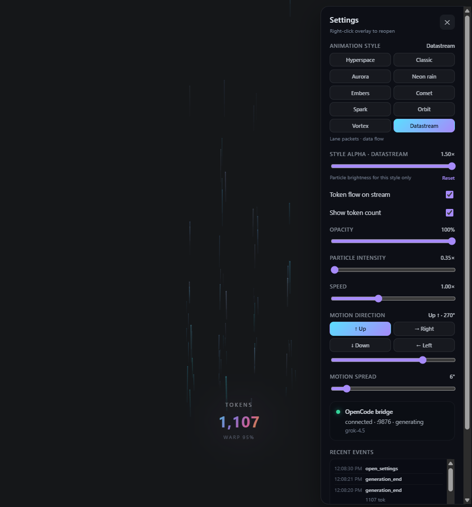
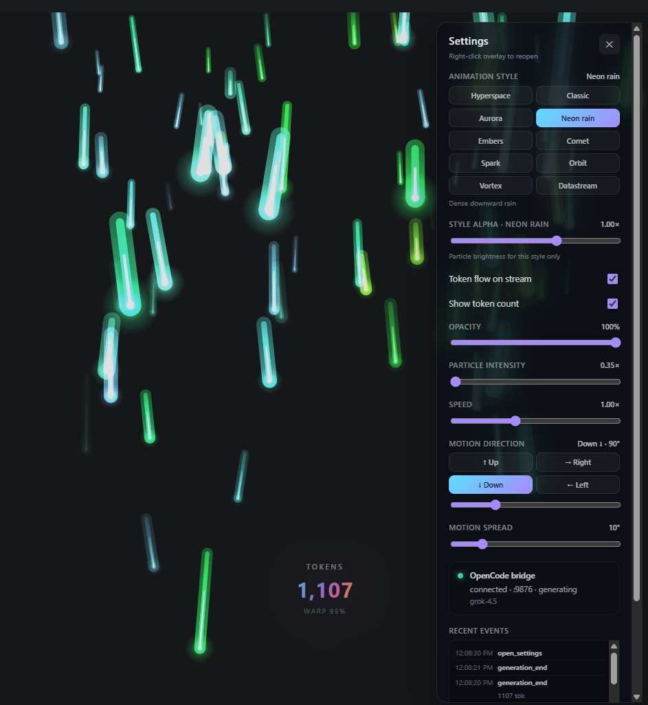

Auto show / hide
Overlay appears on generation and hides when every concurrent OpenCode session finishes (any-active multi-process).
A sleek, transparent desktop overlay that automatically triggers a beautiful Warp Speed particle animation when using Grok through OpenCode.
Overlay appears on generation and hides when every concurrent OpenCode session finishes (any-active multi-process).
Default Hyperspace plus Signal waves, Datastream, Orbit, Aurora, and more — reactive start kick, idle shimmer, token heartbeat, completion bloom.
Transparent field stays out of the way — generation does not grab IDE focus; Settings still can when you open them.
Works with your existing OpenCode setup (any provider, including Grok / xAI).
Log detect (OpenCode ≥1.15 + legacy), claimed multi-process log tail, SQLite token
poll, quiet TUI (no [EVENT] spam).
Floating +N chips ride the stream; per-style alpha; intensity tracks live tokens.
oc / shim keep your current folder so OpenCode opens the project you
launched from.
Script-relative tool root (no hard-coded install path) · PowerShell + shell installers · tray + autostart.
⚠️ Actively developed. Contributions and feedback are welcome on GitHub.



Clone repo → build overlay → install-shim.ps1 →
install-autostart.ps1 → run opencode from your project
folder. Tool root is script-relative (or AGENT_TOOL_ROOT).
Build .app → ./install-shim.sh →
./start-overlay.sh → run opencode from your project.